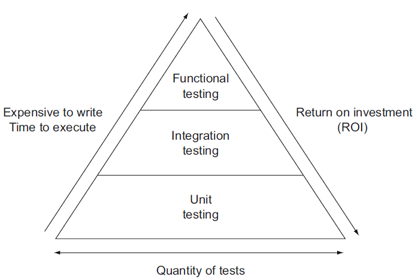

Testing#
Note
This section is about general testing of napari. Other testing related
information can be found in:
Plugin testing guidelines - information on testing plugins.
app-model testing- information about testing app-model aspects of
napari.
Overview#
We use unit tests, integration tests, and functional tests to ensure that
napari works as intended. We have:
Unit tests which test if individual modules or functions work correctly in isolation.
Integration tests which test if different modules or functions work properly when combined.
Functional tests which test if slices of
naparifunctionality work as intended in the whole system.
Testing philosophy#
To get the most return on investment (ROI) from our coding, we strive to test as much as we can with unit tests, requiring fewer integration tests, and the least number of functional tests as depicted in the test pyramid below from softwaretestinghelp.com:

Unit tests are at the base of the pyramid because they are the easiest to write and the quickest to run. The time and effort to implement and maintain tests increases from unit tests to integration and functional tests.
Test organization#
All of napari tests are located in folders named _tests. We use the
pytest library and test runner to
execute our tests locally and in
continuous integration,
CI.
Integration and functional tests#
Our integration and functional tests are located in the
napari/_tests
folder at the top of the repository.
Unit tests#
To keep unit tests close to their related source code, these tests are located
in module folders. For example, units tests for the Image layer are located
in
/napari/layers/image/_tests
alongside the Image layer’s module code
/napari/layers/image.
napari is made up of its core library code and its GUI code. As a general practice, we strive to unit test as much of our core library code, models and utils, independently of our GUI code.
Core library unit tests#
Core library tests are located in the following folders:
GUI unit tests#
Our GUI code have tests in the following folders:
These GUI tests are ignored when we run them in the subset of our continuous integration workflows. Workflows that run in a “headless” environment (without a Qt backend). Testing of core library, or “non-GUI” code, that requires a specific GUI backend are also found in these folders.
napari plugin tests#
The napari/plugins folder contains most tests related to plugins.
pytest fixtures#
Pytest fixtures are used to set up test state, such as setup and teardown, and provide frequently test data. These fixtures reduce repetitive code when writing and running tests. The fixtures can be found in:
napari/conftest.py- available globally to all ofnapari.napari/utils/_testsupport.py- available globally to all ofnapariand to all tests in the same virtual environment thatnapariis in (as thistestsupport.pyfile is exported).
make_napari_viewer fixture#
One often used fixture is make_napari_viewer. This fixture can take an
argument show which is either True or False. In case your test depends on
rendering of the viewer, it should be set to True. This is, for example, the
case when testing a screenshot functionality. Otherwise, it is best to set the
argument to False to prevent the viewer from fully rendering.
napari builtin plugin fixtures#
napari comes with a number of samples and examples builtin. There are also
fixtures for testing these napari builtin plugins that provide contributions
that come builtin with napari. These fixtures are found in
napari_builtins/_tests/conftest.py
and are available to tests stored in
napari_builtins/_tests.
Running tests#
To run our test suite locally, run pytest on the command line.
When running tests, use a
napari development installation.
Run GUI tests locally#
Since napari can run as an interactive application, some tests require showing
GUI elements (such as testing screenshots) and window focus (such as testing
drag and drop behavior). By default, these tests are only run during continuous
integration. If you’d like to enable GUI element tests to run locally, you can
set the environment variables NAPARI_POPUP_TESTS=1, NAPARI_FOCUS_TESTS=1,
or CI=1 before the pytest command:
CI=1 pytest
Note: setting CI=1 will also disable certain tests that take too long on CI.
Also, if running the GUI tests that use pyautogui on macOS, be sure to set
the Terminal app Accessibility permissions in
System Settings > Privacy & Security > Accessibility so pyautogui can
control the mouse, keyboard, etc.
Use tox to run tests locally#
It is also possible to run tests locally using tox. We use tox to run test
in CI. The main difference between running pytest locally or tox locally is
that tox will create a virtual environment for each test environment, so it
will take a bit more time. Though, tox will be more similar to the CI
environment. The only requirement for running tests is to have tox in your
environment.
tox can be used to run tests for a single environment configuration too.
For example, to run tests using tox for Python 3.13 and pyqt6, enter:
tox -e py313-pyqt6
To get the list of all available environment configurations that may be run:
tox list
Minimum requirements testing#
Tests may be run against the minimum requirements declared in the
pyproject.toml file. This checks if napari will work even with outdated or
minimal dependencies. If the minimal requirements test run fails, it is likely
either a simple regression fix or a reason to bump the minimum requirements in
the pyproject.toml file.
To run this test, prefix the tox command with MIN_REQ=1:
MIN_REQ=1 tox -e py311-pyqt6 --recreate
Running with constraints#
To fully reproduce the CI environment, you might use our constraints files which fully specifies dependency versions. For example, to run tests using Python 3.13 and pyqt6 with a constraints file, enter:
UV_CONSTRAINT=resources/constraints/constraints_py313.txt tox -e py313-pyqt6
Constraint usage guarantees the same version of dependencies as in the CI environment where dependencies are pinned to a specific PyPI package version.
While it usually isn’t needed to run this locally, running tests with the constraint file ensures that tests run with the exact same versions of dependencies as in napari’s CI environment.
Running a subset of test using tox#
To run a subset of tests using tox, add a directory or file after -- and that
will be passed to pytest. For example, to run only tests in the
src/napari/layers/image/ file using Python 3.13 and pyqt6, enter:
tox -e py313-pyqt6 -- src/napari/layers/image
Use tox to create an environment for debugging#
tox provides a convenient way to create a virtual environment for debugging
via the devenv command. For example, to create a virtual environment for
debugging using Python 3.13 and pyqt6, enter:
tox devenv -e py313-pyqt6
Then at the end of the output is a path to created virtual environment.
...
ROOT: created development environment under [...]/napari/venv
You can activate it in your IDE or terminal as a normal virtual environment.
Use tox to measure coverage#
You might want to locally check how your changes affect test coverage. You can run tox with coverage measurement using the following command:
TOX_TEST_RUNNER="coverage run" tox -e py314-pyqt6
This command will create a coverage report in .coverage file. You can then
generate a report using the following command:
coverage report- to see a report in the console. It will show you the percentage of code covered by tests and the lines that are not covered.coverage html- to generate a report in HTML format. You can then open it in the browser and see exactly which lines are not covered by tests.
Note
We do not use pytest-cov as it does not measure coverage of all code, like
our make-napari-viewer fixture.
Note
Some parts of the code are tested only on a given platform, python version, or in the minimum requirements test, so running coverage locally might not give the same results as on CI.
Run tests without pop-up windows#
Some tests create visible napari viewers, which pop up on your monitor then quickly disappear. This can be annoying if you are trying to use your computer while the tests are running. You can avoid pop-up windows opening two different ways:
Use the
QT_QPA_PLATFORM=offscreenenvironment variable with pytest or tox. This tells Qt to render windows “offscreen”, which is slower but will avoid the distracting pop-ups.QT_QPA_PLATFORM=offscreen pytest napari
or
QT_QPA_PLATFORM=offscreen tox -e py313-linux-pyqt6
If you are using Linux or WSL (Windows Subsystem for Linux), you can use the
xvfb-runcommand. This will run the tests in a virtual X server.xvfb-run pytest napari
or
xvfb-run tox -e py313-linux-pyqt6
where the tox environment selector py313-linux-pyqt6 must match your OS and
Python version.
Tips for speeding up local testing#
Very often when developing new code, you don’t need or want to run the entire
test suite (which can take many minutes to finish). With pytest, it’s easy to
run a subset of your tests:
# run tests in a specific subdirectory
pytest napari/components
# run tests in a specific file
pytest napari/components/_tests/test_add_layers.py
# run a specific test within a specific file
pytest napari/components/_tests/test_add_layers.py::test_add_layers_with_plugins
# select tests based on substring match of test name:
pytest napari/layers/ -k 'points and not bindings'
In general, it pays to learn a few of the tips and tricks of running pytest.
Testing coverage locally#
We aim for good test coverage,
and we use codecov during continuous
integration to make sure we maintain good coverage. If you’d like to test
coverage locally as you develop new code, you can install
pytest-cov and take advantage of
a few handy commands:
# run the full test suite with coverage
pytest --cov=napari
# instead of coverage in the console, get a nice browser-based cov-report
pytest --cov=napari --cov-report=html
open htmlcov/index.html # look at the report
# run a subset of tests with coverage
pytest --cov=napari.layers.shapes --cov-report=html napari/layers/shapes
open htmlcov/index.html # look at the report
Writing tests#
Writing tests for new code is a critical part of keeping napari maintainable as
it grows. Tests are written in files with names that begin with test_* and
these test files are contained in one of the _tests directories.
Writing tests is a learned skill. If you are starting out writing tests,
pytest’s documentation provides good examples. Reading existing tests is also
helpful for understanding how tests are written. If you have questions, ask
them in our chat.
Mocking: “Fake it till you make it”#
It can be confusing to write unit tests for individual functions, when the
function being tested in turn depends on the output from some other function or
method. This makes it tempting to write integration tests that “just test the
whole thing together”. A useful tool in this case is the mock object
library. “Mocking” lets
you patch or replace parts of the code being tested with “fake” behavior or
return values, so that you can test how a given function would perform if it
were to receive some value from the upstream code. For a few examples of using
mocks when testing napari, search the codebase for
unittest.mock.
Property-based testing with Hypothesis#
Property-based tests allow you to test that “for any X, …” - with a much
nicer developer experience than using truly random data. We use Hypothesis for
unit or integration tests where there are simple properties like
x == load(save(x)) or when Napari implements a function we can check against
the equivalent in a trusted library for at least some inputs.
See also this paper on property-based testing in science, issue #2444, and the Hypothesis documentation (including Numpy support).
Writing tests of the GUI#
Fixtures are used when testing the GUI. Fixtures are helpful for setting state such as setup and teardown of the GUI. When using fixtures with mocks, the GUI behavior can be simulated and tested.
Testing with Qt and napari.Viewer#
There are a couple things to keep in mind when writing a test where a Qt
event loop or a Viewer is required. The important thing is
that any widgets you create during testing need to be cleaned up at the end of
each test. We thus recommend that you use the following fixtures when needing a
widget or Viewer in a test.
See also
Grzegorz Bokota, a napari core team member, has written an excellent blog post on preventing segfaults in test suite that has Qt Tests.
qapp and qtbot#
If you need to use any Qt related code in your test, you need to ensure that
a QApplication is created. To to this we suggest you use the
qapp
fixture from
pytest-qt, a napari
testing dependency.
If you need to instantiate a Qt GUI object (e.g., a widget) for your test, we
recommend that you use the
qtbot
fixture. qtbot, which itself depends on qapp , allows you to test user
input (e.g., mouse clicks) by sending events to Qt objects.
Note
Fixtures in pytest can be a little mysterious, since it’s not always clear
where they are coming from. The pytest-qt qapp and qtbot fixtures can be
used in two ways; by adding them to the list of arguments of your test
function:
def test_something(qtbot):
...
or by using pytest’s usefixtures, which avoids adding an unused argument to your
test function:
@pytest.mark.usefixtures('qtbot')
def test_something():
...
qtbot also provides a convenient
add_widget/addWidget
method that will ensure that the widget gets closed and properly cleaned at the
end of the test. This can prevents segfaults when running several tests. The
wait_until/waitUntil
method is also useful to wait for a desired condition. The example below
adds a QtDims widget, plays the Dims and checks that the QtDim widget
is playing before we make any assertions.
def test_something_else(qtbot):
dims = Dims(ndim=3, ndisplay=2, range=((0, 10, 1), (0, 20, 1), (0, 30, 1)))
view = QtDims(dims)
qtbot.addWidget(view)
# Loop to prevent finishing before the assertions in this test.
view.play(loop_mode='loop')
qtbot.waitUntil(lambda: view.is_playing)
...
qt_viewer and viewer_model#
Since napari==0.5.4 we have implemented the qt_viewer
pytest fixture
which can be used for tests that are only using the ViewerModel api or are
only checking rendering of the viewer. For the current moment, it is only for
internal use and is not exported to the global scope, as it is defined in
conftest.py file.
The qt_viewer fixture returns the instance of the
QtViewer class. This class does not provide the same api as
the ViewerModel class, but has an associated
ViewerModel instance, which can be accessed by the viewer
attribute. Alternatively, you could use the viewer_model fixture, which
returns this instance of ViewerModel class.
def test_something(qt_viewer):
qt_viewer.viewer.add_image(np.random.random((10, 10)))
assert len(viewer.layers) == 1
assert viewer.layers[0].name == 'Image'
or
def test_something(qt_viewer, viewer_model):
viewer_model.add_image(np.random.random((10, 10)))
assert len(viewer.layers) == 1
assert viewer.layers[0].name == 'Image'
The qt_viewer fixture takes care of proper teardown of all qt widgets related
to the viewer, including hiding and clearing any references to viewer
instances. If you need to adjust the QtViewer for a given
test file
you can use the qt_viewer_ fixture.
@pytest.fixture
def qt_viewer(qt_viewer_):
# in this file we need to have added data and 3d view for all tests in file
qt_viewer_.viewer.add_image(np.random.random((5, 10, 10)))
qt_viewer_.viewer.dims.ndisplay = 3
return qt_viewer_
or
@pytest.fixture
def qt_viewer(qt_viewer_):
# Make bigger viewer for all tests in file
qt_viewer_.setGeometry(0, 0, 1000, 1000)
return qt_viewer_
make_napari_viewer#
For more complex test cases where we need to fully test application behaviour
(for example, using the viewer.window API) we can use make_napari_viewer
pytest fixture.
However, the creating and teardown of the whole viewer is more fragile and
slower than using just the qt_viewer fixture. This fixture is available
globally and to all tests in the same environment that napari is in (see
Test organization for details). Thus, there is no need to import it, you
simply include make_napari_viewer as a test function parameter, as shown in
the Examples section below:
- napari.utils._testsupport.make_napari_viewer()[source]#
A pytest fixture function that creates a napari viewer for use in testing.
This fixture will take care of creating a viewer and cleaning up at the end of the test. When using this function, it is not necessary to use a qtbot fixture, nor should you do any additional cleanup (such as using qtbot.addWidget or calling viewer.close()) at the end of the test. Duplicate cleanup may cause an error.
To use this fixture as a function in your tests:
- def test_something_with_a_viewer(make_napari_viewer):
# make_napari_viewer takes any keyword arguments that napari.Viewer() takes viewer = make_napari_viewer()
It accepts all the same arguments as napari.Viewer, notably show which should be set to True for tests that require the Viewer to be visible (e.g., tests that check aspects of the Qt window or layer rendering). It also accepts the following test-related parameters:
- ViewerClassType[napari.Viewer], optional
Override the viewer class being used. By default, will use napari.viewer.Viewer
- strict_qtbool or str, optional
If True, a check will be performed after test cleanup to make sure that no top level widgets were created and not cleaned up during the test. If the string “raise” is provided, an AssertionError will be raised. Otherwise a warning is emitted. By default, this is False unless the test is being performed within the napari package. This can be made globally true by setting the ‘NAPARI_STRICT_QT’ environment variable.
Examples
>>> def test_adding_shapes(make_napari_viewer): ... viewer = make_napari_viewer() ... viewer.add_shapes() ... assert len(viewer.layers) == 1
>>> def test_something_with_strict_qt_tests(make_napari_viewer): ... viewer = make_napari_viewer(strict_qt=True)
Testing QWidget visibility#
When checking that QWidget visibility is updated correctly, you may need to
use
qtbot.waitUntil
or
qtbot.waitExposed
(see Writing tests of the GUI for details on qtbot). This is because visibility can
take some time to change.
For example, the following code can be used to check that a widget correctly appears after it is created.
from qtpy.QtWidgets import QWidget
def test_widget_hidden(make_napari_viewer, qtbot):
"""Check widget visibility correctly updated after hide."""
# create viewer and make it visible
viewer = make_napari_viewer(show=True)
viewer.window.add_dock_widget(QWidget(viewer), name='test')
widget = viewer.window._dock_widgets['test']
# wait until the `widget` appears
qtbot.waitUntil(widget.isVisible)
assert widget.isVisible()
Note that we need to make the viewer visible when creating it as we are
checking visibility. Additionally, you can set the timeout for
qtbot.waitUntil (default is 5 seconds).
Another function that may be useful for testing QWidget visibility is
QWidget.isVisibleTo, which
tells you if a widget is visible relative to an ancestor.
Skipping tests with GUI elements or need window focus#
When you want to mark a test that should be skipped during a test run, pytest
has built-in decorators that can be added before the test. For example,
@pytest.mark.skip or @pyteset.mark.skipif can decorate a test that you want
to skip:
@pytest.mark.skip(reason='test is causing intermittent failures')
def test_hello_world_exists():
# test source code
...
You can also use custom napari decorators to skip tests that use popups or need
window focus. These decorators are defined in napari/_tests/utils. Tests that
require showing GUI elements should be marked with skip_local_popups. If a
test requires window focus, it should be marked with skip_local_focus. To use
these custom skip decorators, import the decorator and apply it to a test:
from napari._tests.utils import skip_local_popups
@skip_local_popups
def test_popup_window_after_error():
# test source code
...
This is so they can be excluded and run only during continuous integration (see Running tests for details).
Known testing issues#
There are several known issues with displaying GUI tests on windows in CI, and so certain tests have been disabled from windows in CI, see #1377 for more discussion.
Running napari tests on Wayland#
In the napari test suite we use pyautogui to simulate mouse and keyboard
events. On Linux it uses python-xlib to implement this utility. Unfortunately
it might not work out of the box on Wayland (even with xwayland installed).
We observed this with (for example) the GNOME desktop.
...
.venv/lib/python3.12/site-packages/Xlib/protocol/display.py:129: in __init__
raise error.DisplayConnectionError(self.display_name, r.reason)
E Xlib.error.DisplayConnectionError: Can't connect to display ":0": b'Authorization required, but no authorization protocol specified\n'
Based on experiments we found that executing xhost +SI:localuser:$USER solves
the problem. It can be done automatically on startup by adding the above line
to ~/.config/autostart/xhost.desktop.
[Desktop Entry]
Type=Application
Name=Xhost Fix for XWayland
Exec=xhost +SI:localuser:grzegorz
Terminal=false
NoDisplay=true
This file also needs to be made executable with
chmod +x ~/.config/autostart/xhost.desktop.